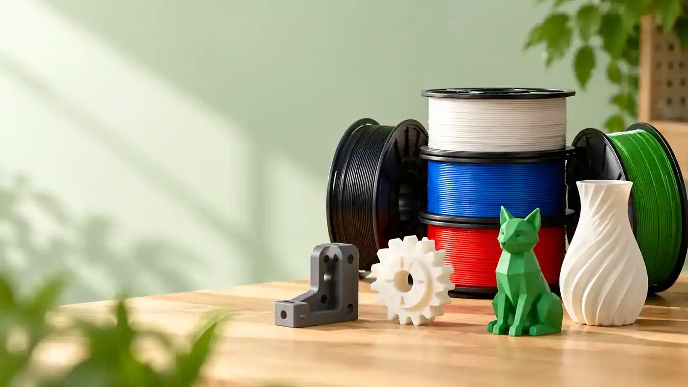

Impresión 3D
Impresoras, filamentos y accesorios
Guías para comparar impresoras FDM, materiales y accesorios según el tipo de proyecto y el nivel de uso.
Explorar categoría →Información clara para comparar productos, entender sus diferencias y elegir según el uso que realmente les vas a dar.
Encontrarás guías sobre herramientas, impresión 3D y productos para el hogar. Cada una explica las prestaciones, compatibilidades y limitaciones que conviene conocer antes de comprar.
Elige en función de lo que vas a hacer: altura de elevación para un gato, materiales compatibles en una impresora o mantenimiento en un producto de hogar. Las diferencias prácticas están en cada guía.
Entra en Herramientas, Impresión 3D u Hogar según lo que quieras comprar.
Guías para comparar impresoras FDM, materiales y accesorios según el tipo de proyecto y el nivel de uso.
Explorar categoría →
Comparativas centradas en potencia, capacidad, equipamiento, compatibilidad y adecuación a cada trabajo.
Explorar categoría →
Guías prácticas para valorar autonomía, comodidad, mantenimiento y prestaciones en productos de uso diario.
Explorar categoría →Guías para comparar sierras, impresoras 3D y otros productos según sus características y el uso previsto.

Modelos de 165 mm comparados por profundidad de corte, carril guía, freno, peso y equipamiento.
Ver comparativa →
Volumen, estructura, materiales compatibles, cámara cerrada y funciones que conviene revisar antes de elegir.
Ver guía →
Modelos FDM comparados según volumen, materiales, estructura, automatización y tipo de usuario.
Ver comparativa →
ELEGOO, eSUN, SUNLU, OVERTURE, JAYO y Winkle comparados por facilidad, fiabilidad, velocidad, AMS y formulación.
Ver comparativa →
Diferencias entre PLA, PETG, ABS, ASA, TPU y otros materiales utilizados habitualmente en impresión FDM.
Ver filamentos →
Cómo valorar par, percusión, tipo de motor, plataforma de baterías y contenido del kit.
Ver guía →
Opciones orientadas a distintos niveles de uso, desde bricolaje doméstico hasta trabajos más frecuentes.
Ver comparativa →
Desde modelos con LiDAR y base de carga hasta estaciones que vacían, lavan y secan las mopas automáticamente.
Ver comparativa →
Comparación centrada en capacidad, altura mínima, elevación y adecuación para distintos tipos de vehículo.
Ver comparativa →Una buena ficha técnica ayuda, pero hay detalles del uso que pueden descartar un producto.
Comprueba las medidas, la compatibilidad y las funciones que necesitas para el trabajo concreto.
Piensa también en el peso, el mantenimiento, el espacio que ocupa y sus límites.
Revisa la variante y el contenido del paquete en la tienda antes de comprar: pueden cambiar.
Si necesitas levantar el coche con un gato que ocupe poco al guardarlo o quieres secar ropa dentro de casa, estas guías te ayudan a comprobar qué modelo encaja en cada situación.